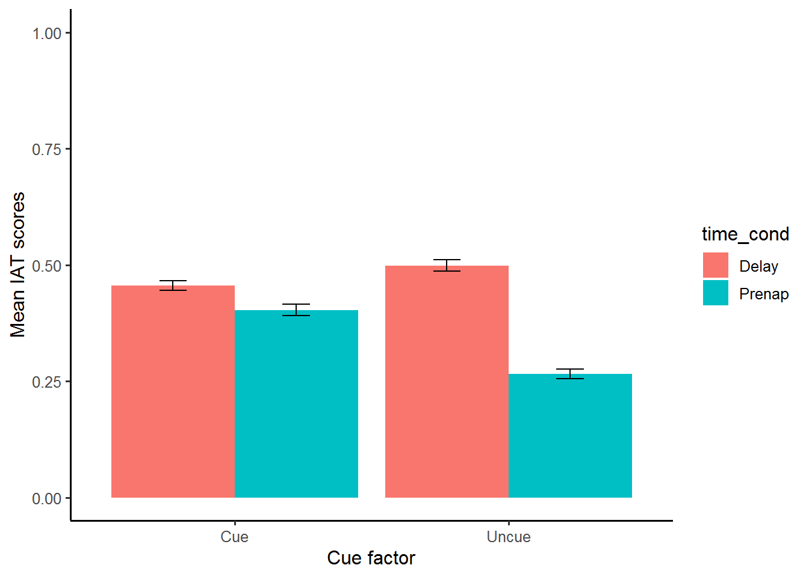
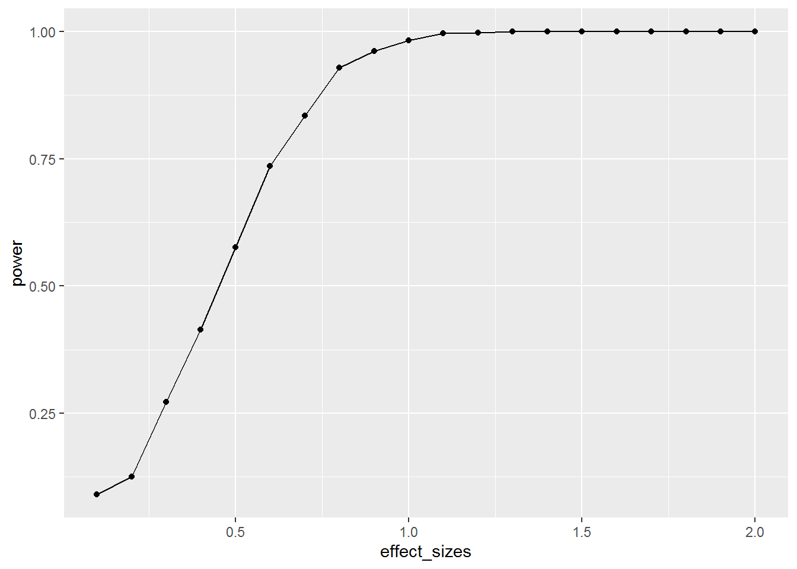

There is evidence by Hu (2015) on the unlearning of social bias by reinforcing a counterbias behavior during slow-wave/REM sleep - the optimal time frame to consolidate new memories. The reproduced analysis pertains to the interaction of cued and uncued reduction bias before sleep (prenap), then, one week later (delayed). A power analysis shows that the original effect size may only be observed approximately 14% of the time on average.
#downloads csv data into R
aaa3841_OpenData_withNA <- read.csv("~/GitHub(assignments)/midterm/midterm/aaa3841_OpenData_withNA.csv")IAT bias scores were grouped in R-studio for each participant in order to perform a 2x2 (cue/uncue vs prenap/delay) repeated measure ANOVA. The group means are displayed in Figure 1 followed by the ANOVA results in Figure 2. There was a main effect of Time, F(1, 37) = 5.76, MSE = 0.15, p = .022. Mean IAT scores remained lower after training, between prenap testing (0.447) and testing one week later (0.334). There was not a main effect of cue factor after learning, F(1, 37) = 0.34, MSE = 0.28, p = .566. The two-way interaction between Time and Cue after training was significant, F(1, 37) = 4.67, MSE = 0.07, p = .037. The difference in prenap and delay scores was significant only when the cue was not initiated, indicating that memory reactivation sustained after counterbias training.
Figure 1.
library(xtable)
means = c(mean(cue_prenap), mean(cue_delay, na.rm = TRUE),
mean(uncue_prenap), mean(uncue_delay, na.rm = TRUE))
SEM = c(sd(cue_prenap)/38, sd(cue_delay, na.rm=TRUE)/38,
sd(uncue_prenap)/38, sd(uncue_delay, na.rm=TRUE)/38)
group_means = data.frame(GroupMean=means, Cue=c("Cue","Cue","Uncue","Uncue"),
Time=c("Prenap","Delay","Prenap","Delay"), SEM)
knitr::kable(xtable(group_means))| GroupMean | Cue | Time | SEM |
|---|---|---|---|
| 0.4034053 | Cue | Prenap | 0.0124207 |
| 0.4555480 | Cue | Delay | 0.0100403 |
| 0.2657306 | Uncue | Prenap | 0.0105882 |
| 0.4991466 | Uncue | Delay | 0.0118761 |
#Visualize how the average bias score changes between conditions
group_means = data.frame(all_means=means, cue_f=c("Cue","Cue","Uncue","Uncue"),
time_cond=c("Prenap","Delay","Prenap","Delay"), SEM)
library(ggplot2)
ggplot(group_means, aes(x=cue_f,
y=all_means,
group=time_cond,
fill=time_cond))+
geom_bar(stat="identity",position="dodge")+
theme_classic(base_size=12)+
xlab("Cue factor") +
ylab("Mean IAT scores")+
geom_errorbar(aes(ymin=all_means-SEM,
ymax=all_means+SEM),
position=position_dodge(width=0.9),
width=.2,
color="black")+
coord_cartesian(ylim=c(0,1))
Figure 2.
# 2-way between subjects anova
library(xtable)
aov_out = aov(subject_dv~cue_factor*time_factor+Error(sub/(cue_factor*time_factor)), clean_df)
knitr::kable(xtable(summary(aov_out)))| Df | Sum Sq | Mean Sq | F value | Pr(>F) | |
|---|---|---|---|---|---|
| Residuals | 37 | 9.4853844 | 0.2563617 | NA | NA |
| cue_factor | 1 | 0.0929324 | 0.0929324 | 0.3355098 | 0.5659427 |
| Residuals | 37 | 10.2485769 | 0.2769886 | NA | NA |
| time_factor | 1 | 0.8440958 | 0.8440958 | 5.7634410 | 0.0215060 |
| Residuals | 37 | 5.4189059 | 0.1464569 | NA | NA |
| cue_factor:time_factor | 1 | 0.3290260 | 0.3290260 | 4.6718467 | 0.0372022 |
| Residuals | 37 | 2.6058138 | 0.0704274 | NA | NA |
The replicated interaction was due to a significant difference of the time factor in the uncued group. Since an F-value is equal to the square of a t-value, we can simulate power by simulating a t-test on the difference of time factor. The mean score difference between prenap and delay is (0.143) for cue and uncue. We applied this difference to our simulation assuming equal variance in our two samples (n = 38), and calculated an estimated power of 0.136, meaning the observed effect size may only occur 13.6% of the time.
# Sim_power is a function to run a simulated t-test
sim_power <- function(x){
A <- rnorm(n=38,mean=0, sd=1)
B <- rnorm(n=38,mean=(0+x), sd=1)
return(t.test(A,B,var.equal=TRUE, paired = TRUE)$p.value)
}
# vector of effect sizes to be simulated
effect_sizes <- seq(.1,2,.1)
# run a power simulation for each effect size 1000 times
power <- sapply(effect_sizes,
FUN = function(x) {
sims <- replicate(1000,sim_power(x))
sim_power <- length(sims[sims<.05])/length(sims)
return(sim_power)})# combine results of simulation into a data frame
plot_df <- data.frame(effect_sizes,power)# plot the power curve
ggplot(plot_df, aes(x=effect_sizes,
y=power))+
geom_point()+
geom_line()
Hu, X., Antony, J. W., Creery, J. D., Vargas, I. M., Bodenhausen, G. V., & Paller, K. A. (2015). Unlearning implicit social biases during sleep, 348 (6238), 1013–1015. doi:10.1126/science.aaa3841